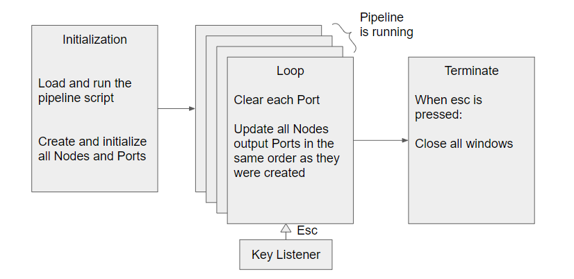

Create your own node¶
NeuXus basis¶
Before writing your own Node, you need to understand a bit how the softare works.
{kind=link}
NeuXus first loads the pipeline script. It then repeates infinetely a loop that clears all Ports and updates each Node. The update() method of each Node is called at each iteration and get data from the input Port. NeuXus is stopped when Esc is pressed. All terminate function are then called.
A Node has then 3 methods: __init__(), update() and terminate():
{kind=link}
A Node can have a Port as input and/or output. Ports can share different kind of Data stored in Pandas DataFrame (table). A Port is an iteration object, it means that to get its values, you need to iter over it:
port = Port()
for chunk in port:
...
Type of ports are:
'signal': 1 iteration = 1 chunk of the continuous signal
'epoch': 1 iteration = 1 epoch
'marker': 1 iteration = 1 marker
'spectrum': 1 iteration = 1 spectrum computed at one timestamp
'vector': 1 iteration = 1 vector
A Node template¶
Get inspiration from the following template to write new pipelines.
# description of the module file at the very beginning of the file
"""
Detailed template for creating basic custom nodes
For special and more complex nodes, please refer to the existing nodes
author: ...
mail: ...
"""
# import all usefull library
# example:
from scipy import signal
import numpy as np
from neuxus.node import Node
class MyNewNode(Node):
"""Add global description,
Attributes:
- output: output port
Args:
- input_port (Port): input port of type data_type
- arg1 (specify type): description
- arg2 (specify type): description, default is 4
Example: MyNewNode(Port4, 8, 12, order=5)
"""
def __init__(self, input_port, arg1, arg2=4):
'''Initialize the node before running the pipeline'''
# create self.input and self.output
Node.__init__(self, input_port)
# make sure you get the right input.data_type
# data_type is either 'epoch', 'signal', 'marker' or 'spectrum'
assert self.input.data_type in ['epoch', 'signal']
# update self.output parameters
self.output.set_parameters(
# self.input.data_type if the data_type of output is the same as
# in input or among ['epoch', 'signal', 'marker', 'spectrum']
data_type=self.input.data_type,
# self.input.channels if the output channels are the same as
# in input else list of output channels (['Ch1', 'Ch2'] for example)
channels=self.input.channels,
# self.input.sampling_frequency if the output sampling frequency is the same as
# in input or specify the new output sampling frequency
sampling_frequency=self.input.sampling_frequency,
# self.input.meta and/or add every details you want to add in meta
meta=self.input.meta,
# if the epoching frequency is unchanged (None or float), specify
# self.input.epoching_frequency else specify the new epoching frequency
epoching_frequency=self.input.epoching_frequency
)
# initialize parameters that will be useful for calculation:
# ex:
self._arg1 = arg1 / 10 # _arg means a protected arg
self._channels = self.input.channels
# log all the parameters you think it is useful to log
Node.log_instance(self, {
# specify the name of the parameter, and its value
'my arg1': self._arg1
})
def update(self):
'''Update the output'''
# iter over the input, you might receive several chunks per each global NeuXus iteration
for chunk in self.input:
# chunk type depends on self.input.data_type:
# 'marker': a DataFrame containing one marker
# 'signal': a DataFrame containing one chunk of the signal
# 'epoch': a DataFrame containig one epoch
# 'spectrum': a special DataFrame containing the signal
# 'vector': a DataFrame containig one vector
# to see more particularly what a chunk looks like add (for dev:
print(chunk)
# compute all necessary calculation
# ...
# to update the output port, use set or set_from_df
# for example:
self.output.set(rows=chunk.value, timestamps=chunk.index, columns=self._channels)
# or
self.output.set_from_df(chunk)
Feel free to share your Nodes to our community on Github